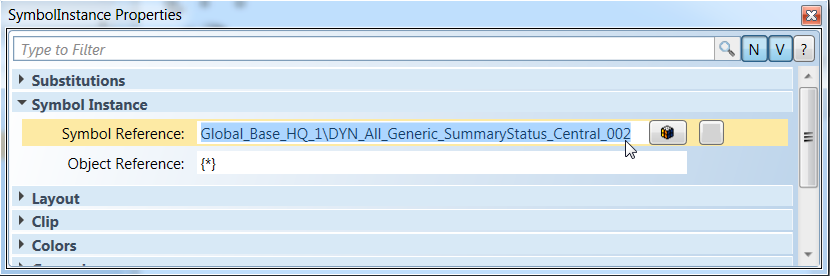
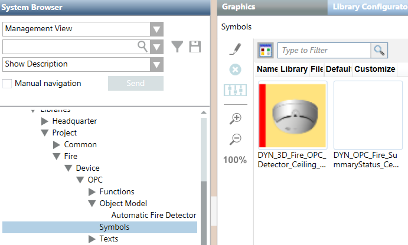

Configure the Symbol Image
- You know the name of the renamed background image (see Configure the Background Image).
- In the customized OPC library, select the symbol folder.
- Click the Graphics tab.
- Click Edit
 .
. - The Graphic Editor displays.
- In the View tab, enable the following views:
- Library Browser
- Element Tree
- Properties
- In the Library Browser view, proceed as follows:
a. Select the fire detection library (for example, Fire_Detection_HQ_1).
b. Select a symbol with dynamic background. Make sure the name begins with DYN_3D.
c. Right-click the symbol and select Edit. - The symbol displays.
- In the Element Tree view, proceed as follows:
a. Click Show all Elements at the bottom.
at the bottom.
b. Expand the Layer tree.
c. Click SymbolInstance.
NOTE: If the SymbolInstance item does not display, the symbol you chose has no animated background and cannot be customized. - The name of the Properties view changes to SymbolInstance Properties
- In the SymbolInstance Properties view, proceed as follows (see Figure The Reference to the Background Image):
a. Locate the Symbol Instance > Symbol Reference text field.
b. In System Browser, select Show Description [Name]. - The name of the folder of the customized OPC library displays in the System Browser tree along with the folder description (for example, OPC [Fire_Device_OPC_Project_1]).
c. Replace the first part of the reference with the name of the folder of the customized OPC library and the second part with the name of the renamed background image.
For example, replace:
Global_Base_HQ_1\DYN_All_Generic_SummaryStatus_Central_002
with:
Fire_Device_OPC_Project_1\DYN_OPC_Fire_SummaryStatus_Central_002 - Click Save As
 .
. - In the Save As window, proceed as follows:
a. Select the symbol folder of the customized OPC library.
b. Rename the symbol, for example:
DYN_3D_Fire_OPC_Detector_Ceiling_None_Horizontal_001
instead of the original:
DYN_3D_Detector_Ceiling_None_Horizontal_001
c. Click Save.
- The symbol image displays in the Graphics tab of the symbol folder of the customized OPC library.
- The symbol image is linked to the renamed background image.

